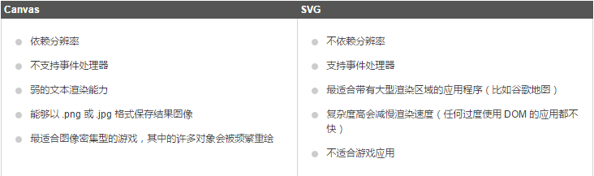
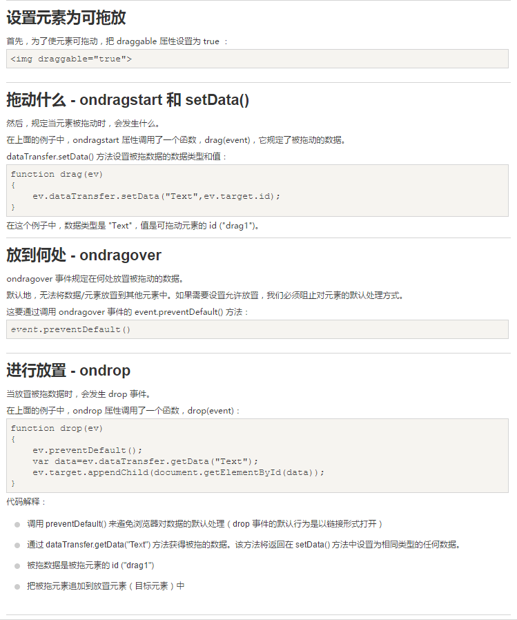

Internet Explorer 9
Windows Internet Explorer 9(缩写为 IE9 )在2011年3月14日21:00 发布。
<!--[if lt IE9]>
src="http://apps.bdimg.com/libs/html5shiv/3.7/html5shiv.min.js"
<![endif]-->
article,aside,dialog,footer,header,section,footer,nav,figure,menu{display:block}
定义图像，比如图标和其他图像canvas元素用于图形的绘制，通过脚本 (通常是JavaScript)来完成. canvas 标签只是图形容器，您必须使用脚本来绘制图形。 你可以通过多种方法使用Canva绘制路径,盒、圆、字符以及添加图像。默认没有边框和内容
createLinearGradient(x,y,x1,y1) - 创建线条渐变 createRadialGradient(x,y,r,x1,y1,r1) - 创建一个径向/圆渐变
多个Canvas同时绘制图片时需要区分变量名，否则会图像会重叠在最后一个Canvas中
SVG 是一种使用 XML 描述 2D 图形的语言。 Canvas 通过 JavaScript 来绘制 2D 图形。 SVG 基于 XML，这意味着 SVG DOM 中的每个元素都是可用的。您可以为某个元素附加 JavaScript 事件处理器。 在 SVG 中，每个被绘制的图形均被视为对象。如果 SVG 对象的属性发生变化，那么浏览器能够自动重现图形。 Canvas 是逐像素进行渲染的。在 canvas 中，一旦图形被绘制完成，它就不会继续得到浏览器的关注。如果其位置发生变化，那么整个场景也需要重新绘制，包括任何或许已被图形覆盖的对象。
FF支持，Chrome不支持
拖放是一种常见的特性，即抓取对象以后拖到另一个位置。 在 HTML5 中，拖放是标准的一部分，任何元素都能够拖放。

control 属性供添加播放、暂停和音量控件。 支持MP3、Ogg、Wav
颜色：
生日：
生日（日期和时间带时区）：
生日（日期和时间不带时区）：
验证E-mail：
生日（月和年）：
选择周：
数量（1-5）属性：min-最小值，max-最大值，step-数字间隔，如果设置为2，则阶加2，value-默认值
非精确数值（滑块）：属性同上
搜索框：
电话号码：
选择时间：
URL：
datalist 元素规定输入域的选项列表。属性属性规定 form 或 input 域应该拥有自动完成功能。当用户在自动完成域中开始输入时，浏览器应该在该域中显示填写的选项：
提供一种验证用户的可靠方法。用于表单的密钥对生成器字段。当提交表单时，会生成两个键，一个是私钥，一个公钥。 私钥（private key）存储于客户端，公钥（public key）则被发送到服务器。公钥可用于之后验证用户的客户端证书（client certificate）。
用于不同类型的输出，比如计算或脚本输出
autocomplete 属性规定 form 或 input 域应该拥有自动完成功能。
当用户在自动完成域中开始输入时，浏览器应该在该域中显示填写的选项。
提示: autocomplete 属性有可能在 form元素中是开启的，而在input元素中是关闭的。
注意: autocomplete 适用于 form 标签，以及以下类型的 input 标签：text, search, url, telephone, email, password, datepickers, range 以及 color。
novalidate 属性的一个boolean 属性.
novalidate 属性规定在提交表单时不应该验证 form 或 input 域。
autofocus 属性是一个 boolean 属性. 属性规定在页面加载时，域自动地获得焦点
First name:form 属性规定输入域所属的一个或多个表单。提示:如需引用一个以上的表单，请使用空格分隔的列表。
Last name:The formaction 属性用于描述表单提交的URL地址.The formaction 属性会覆盖form 元素中的action属性.注意: The formaction 属性用于 type="submit" 和 type="image".
formenctype 属性描述了表单提交到服务器的数据编码 (只对form表单中 method="post" 表单) formenctype 属性覆盖 form 元素的 enctype 属性。 主要: 该属性与 type="submit" 和 type="image" 配合使用。
formmethod 属性定义了表单提交的方式。 formmethod 属性覆盖了 form 元素的的method 属性。 注意: 该属性可以与 type="submit" 和 type="image" 配合使用
novalidate 属性是一个 boolean 属性. novalidate属性描述了 input 元素在表单提交时无需被验证。 formnovalidate 属性会覆盖 form 元素的novalidate属性. 注意: formnovalidate 属性与type="submit一起使用
formtarget 属性指定一个名称或一个关键字来指明表单提交数据接收后的展示。 The formtarget 属性覆盖 form元素的target属性. 注意: formtarget 属性与type="submit" 和 type="image"配合使用.
height 和 width 属性规定用于 image 类型的 input 标签的图像高度和宽度。 注意: height 和 width 属性只适用于 image 类型的input标签。 提示:图像通常会同时指定高度和宽度属性。如果图像设置高度和宽度，图像所需的空间 在加载页时会被保留。如果没有这些属性， 浏览器不知道图像的大小，并不能预留 适当的空间。图片在加载过程中会使页面布局效果改变 （尽管图片已加载）
list 属性规定输入域的 datalist。datalist 是输入域的选项列表。
min、max 和 step 属性用于为包含数字或日期的 input 类型规定限定（约束）。 注意: min、max 和 step 属性适用于以下类型的 input 标签：date pickers、number 以及 range。
Enter a date before 1980-01-01: Enter a date after 2000-01-01: Quantity (between 1 and 5):multiple 属性是一个 boolean 属性. multiple 属性规定input元素中可选择多个值。 注意: multiple 属性适用于以下类型的 input标签：email 和 file。: email, and file.
Select images:pattern 属性描述了一个正则表达式用于验证 input 元素的值。 注意:pattern 属性适用于以下类型的 input 标签: text, search, url, tel, email, 和 password. 提示： 是用来全局 title 属性描述了模式.
Country code:placeholder 属性提供一种提示（hint），描述输入域所期待的值。 简短的提示在用户输入值前会显示在输入域上。 注意: placeholder 属性适用于以下类型的 input 标签：text, search, url, telephone, email 以及 password
required 属性是一个 boolean 属性. required 属性规定必须在提交之前填写输入域（不能为空）。 注意:required 属性适用于以下类型的 input 标签：text, search, url, telephone, email, password, date pickers, number, checkbox, radio 以及 file。
Username:step 属性为输入域规定合法的数字间隔。 如果 step="3"，则合法的数是 -3,0,3,6 等 提示： step 属性可以与 max 和 min 属性创建一个区域值. 注意: step 属性与以下type类型一起使用: number, range, date, datetime, datetime-local, month, time 和 week.
无语义 元素实例: div 和 span - 无需考虑内容. 语义元素实例: form, table, and img - 清楚的定义了它的内容.
section 标签定义文档中的节（section、区段）。比如章节、页眉、页脚或文档中的其他部分。 根据W3C HTML5文档: section 包含了一组内容及其标题
The World Wide Fund for Nature (WWF) is....
定义独立的内容
Windows Internet Explorer 9(缩写为 IE9 )在2011年3月14日21:00 发布。
定义导航链接的部分。 nav 元素用于定义页面的导航链接部分区域，但是，不是所有的链接都需要包含在 nav 元素中!
定义页面主区域内容之外的内容（比如侧边栏）。 aside 标签的内容应与主区域的内容相关.
My family and I visited The Epcot center this summer.
描述了文档的头部区域 header元素注意用于定义内容的介绍展示区域. 在页面中你可以使用多个header 元素.
Windows Internet Explorer 9(缩写为 IE9 )是在2011年3月14日21:00发布的

localStorage - 没有时间限制的数据存储。 sessionStorage - 针对一个 session 的数据存储
在使用 web 存储前,应检查浏览器是否支持 localStorage 和sessionStorage:使用 key="lastname" 和value="Smith" 创建一个 localStorage 键/值对
检索键值为"lastname" 的值然后将数据插入 id="result"的元素中
提示: 键/值对通常以字符串存储，你可以按自己的需要转换该格式。
var db = openDatabase('mydb', '1.0', 'Test DB', 2 * 1024 * 1024);
对应参数：1、数据库名称 2、版本号 3、描述文本 4、数据库大小 5、创建回调。 第五个参数，创建回调会在创建数据库后被调用。